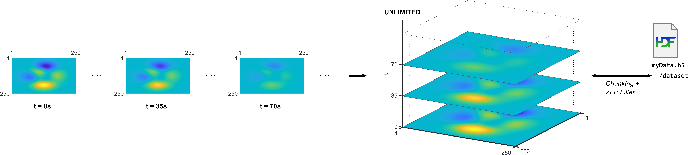

Read and Write HDF5 Datasets Using Dynamically Loaded Filters
The HDF5 library and file format enables using filters on data chunks before they are written to or after they are read from disk. Compression filters, for example, can substantially reduce the size of the data to be stored on disk and improve the overall performance of reading from and writing to an HDF5 dataset.
The HDF5 library includes a small set of internal filters, and MATLAB® supports most of them. While these filters work relatively well, they may not always provide an optimal performance improvement. For this reason, the HDF5 library and MATLAB support dynamically loaded filters, a mechanism that enables loading third-party filters at run time and adding them to the filter pipeline. To use dynamically-loaded filters, install filter plugins for reading datasets that were created using third-party filters, or for creating and writing datasets using third-party filters.
Both MATLAB high- and low-level interfaces support workflows that involve dynamically loaded filters. You can read HDF5 datasets encoded using third-party filters through typical workflows as long as the necessary filter plugins are available on your system.
High-level interface —
h5createsupports two name-value arguments for specifying the filter identifier and parameters when creating datasets.Low-level interface — The low-level interface enables more advanced filter workflows, including
H5P.set_filterfor adding filters to the filter pipeline andH5Z.filter_availfor checking if a filter is available. To take full advantage of the low-level interface, you must be familiar with the HDF5 C API. For more information, see the documentation on the HDF5 Group website about Dynamically Loaded Filters.
Install Filter Plugins
MATLAB supports three internal HDF5 filters: Deflate (GZIP), Shuffle, and Fletcher32. To read or write datasets using third-party filters, install and configure filter plugins.
Install the relevant filter plugins:
On Windows® and Mac — Download and install the plugin binaries for your operating system from The HDF Group.
Install the bundle of filter plugins for the version of HDF5 shipped with your MATLAB release. To query the version of HDF5 in your MATLAB release, use
H5.get_libversion.On Linux® — Get the filter plugin source code and build it against the version of HDF5 that is shipped with MATLAB. To obtain the filter plugin source code, see The HDF Group - Filters. Alternatively, you can build HDF5 from source using the instructions and the export map file from Build HDF5 Filter Plugins on MATLAB Answers™, and then build the filter plugin against your built HDF5 library.
Set the
HDF5_PLUGIN_PATHenvironment variable to point to the local installation of the plugins, and then start MATLAB:On Windows — Set the environment variable using System Properties > Advanced > Environment Variables, and then start MATLAB.
On Linux and Mac — Set the environment variable from the terminal, and then start MATLAB from the same terminal.
Read Datasets Compressed with Third-Party Filters
To read an HDF5 dataset compressed with a third-party filter, install the filter plugin on your system and set the environment variable.
To get information about filters associated with a dataset, use the
h5disp function. For example, get the filter information for
the myFile.h5 dataset. The Filters field
indicates that the filter is registered with The HDF Group. If the required filter
plugin is not installed, MATLAB will throw an error indicating that the filter is not
available.
h5disp("myFile.h5","/SomeDataset")
HDF5 myFile.h5
Dataset 'SomeDataset'
Size: 250x250x181
MaxSize: 250x250xInf
Datatype: H5T_IEEE_F64LE (double)
ChunkSize: 250x250x3
Filters: unrecognized filter (H5Z-ZFP-1.0.1 (ZFP-0.5.5) github.com/LLNL/H5Z-ZFP)
FillValue: 0.000000Note
unrecognized filter indicates that the filter is not one of the HDF5 internal filters (e.g., Deflate); it does not indicate that the filter is not available on your system.
Once the necessary filter plugins are installed and configured, you can use your typical workflows to read the HDF5 dataset. For more information about reading HDF5 data, see Import HDF5 Files.
Write Datasets Compressed with Third-Party Filters
You can create and write an HDF5 dataset using either the high-level interface
(such as h5create and h5write) or low-level
interface (such as H5D.create and H5D.write).
To write a dataset with a third-party filter, first identify the filter ID and
parameters from The HDF Group - Filters page.
For example, create an HDF5 dataset for a time series of 2-D arrays that grows with time. Use data chunking to enable an unlimited third dimension, and use a ZFP filter to compress the data chunks, as shown in this illustration.

Install ZFP Filter Plugin
First, check if the ZFP filter is available on your system.
H5Z.filter_avail(32013)
ans = 0If the function returns
1, the plugin is installed and available on your system. If it returns0, install the ZFP filter plugin.Create HDF5 Dataset
When you create an HDF5 dataset using filters, its list of filters is stored as a dataset property. You can define a filter using either the high-level or the low-level interface. To use filters, you must enable data chunking because filters are applied per chunk.
Create an HDF5 dataset using the high-level
h5createfunction. Specify the chunk size using theChunkSizename-value argument. Specify the filter using theCustomFilterIDandCustomFilterParametersname-value arguments.N = 250; filterID = 32013; % ID of the ZFP filter filterParams = [3 3.5 2 0 0 0 0 0 0]; % Parameters for the ZFP filter filename = "myFile.h5"; dataset = "/dataset"; % Delete file if it exists to restart with a clean file if exist(filename,"file") delete(filename); end % Create dataset with unlimited (infinite) dimension, chunking, and % with ZFP compression. h5create(filename,dataset,[N,N,Inf],"ChunkSize",[N,N,4], ... "CustomFilterID",filterID,"CustomFilterParameters",filterParams);
Alternatively, if you want more control over the filter pipeline, such as adding or updating filters, you can use the low-level interface. The low-level interface has functions for adding multiple filters to the filter pipeline (
H5P.set_filter), for getting filters or information about filters (H5P.get_filter,H5Z.get_filter_info,H5P.get_filter_by_id), for updating filters (H5P.modify_filter), and for removing filters from the pipeline (H5P.remove_filter).For example, create an HDF5 dataset using the low-level interface. Specify the chunk size and the filter using
H5P.set_chunkandH5P.set_filter. You can exclude a filter from any chunks in which there was a filter failure during writing by using theH5Z_FLAG_OPTIONALoption. With this option, the filter does not participate in the pipeline during any subsequent reading of the chunk. To error at the first chunk in which there is a filter failure, use theH5Z_FLAG_MANDATORYoption. Subsequent data is not written.N = 250; filterID = 32013; % ID of the ZFP filter filterParams = [3 3.5 2 0 0 0 0 0 0]; % Parameters for the ZFP filter filename = "myFile.h5"; dataset = "/dataset"; % Delete file if it exists to restart with a clean file if exist(filename,"file") delete(filename); end % Check that ZFP filter is available assert(H5Z.filter_avail(filterID),"ZFP filter (ID %d) unavailable.",filterID); % Create dataspace with unlimited (infinite) dimension UNLIMITED = H5ML.get_constant_value("H5S_UNLIMITED"); dspaceID = H5S.create_simple(3,fliplr([N,N,0]),fliplr([N,N,UNLIMITED])); % Build dataset creation property list with chunking and ZFP filter dcplID = H5P.create("H5P_DATASET_CREATE"); H5P.set_chunk(dcplID,fliplr([N,N,4])); H5P.set_filter(dcplID,filterID,"H5Z_FLAG_MANDATORY",filterParams); % Create file and dataset fileID = H5F.create(filename,"H5F_ACC_TRUNC","H5P_DEFAULT","H5P_DEFAULT"); dsetID = H5D.create(fileID,dataset,"H5T_NATIVE_DOUBLE",dspaceID,[],dcplID,"H5P_DEFAULT"); % Close open resources H5D.close(dsetID); H5F.close(fileID); H5P.close(dcplID); H5S.close(dspaceID);
Write HDF5 Dataset
Write the dataset using the typical workflow. For example, this code writes time-varying data based on the MATLAB
peaksfunction. Theforloop creates a situation similar to saving a data stream, one 2-D array at a time while time flows.Using the high-level interface:
data0 = peaks(N); tic; for t = 0:180 data = data0 * cosd(t); h5write(filename,dataset,data,[1,1,t+1],[N,N,1]); end to
Elapsed time is 1.029668 seconds.
Using the low-level interface:
data0 = peaks(N); tic; fileID = H5F.open(filename,"H5F_ACC_RDWR","H5P_DEFAULT"); dsetID = H5D.open(fileID,dataset); for t = 0:180 data = data0 * cosd(t); H5D.set_extent(dsetID,fliplr([N,N,t+1])); dspaceID = H5D.get_space(dsetID); H5S.select_hyperslab(dspaceID,"H5S_SELECT_SET",... fliplr([0,0,t]),[],[],fliplr([N,N,1])); memspaceID = H5S.create_simple(3,fliplr([N,N,1]),[]); H5D.write(dsetID,"H5ML_DEFAULT",memspaceID,dspaceID,"H5P_DEFAULT",data); end H5S.close(dspaceID); H5D.close(dsetID); H5F.close(fileID); toc
Elapsed time is 0.598005 seconds.
The low-level workflow is more efficient because it requires opening and closing the file and the dataset only once, before and after the loop, respectively. In the high-level workflow, these operations are performed each time
h5writeis called. The low-level interface also allows setting the chunk cache size, which can improve the performance.Read and Display HDF5 Dataset
You can read HDF5 datasets compressed using dynamically loaded filters like any other dataset, as long as relevant filter plugins are installed and the environment variable
HDF5_PLUGIN_PATHis set.data = h5read(filename,dataset,[50,25,1],[3,5,2],[50,40,45])
data(:,:,1) = 0.0145 0.1045 -3.0375 -5.4901 -0.7706 -0.2130 -0.6894 3.7574 0.1285 2.3196 -0.2966 -2.3229 0.5124 0.4879 2.4735 data(:,:,2) = 0.0102 0.0739 -2.1478 -3.8821 -0.5449 -0.1506 -0.4875 2.6569 0.0909 1.6402 -0.2097 -1.6425 0.3623 0.3450 1.7490